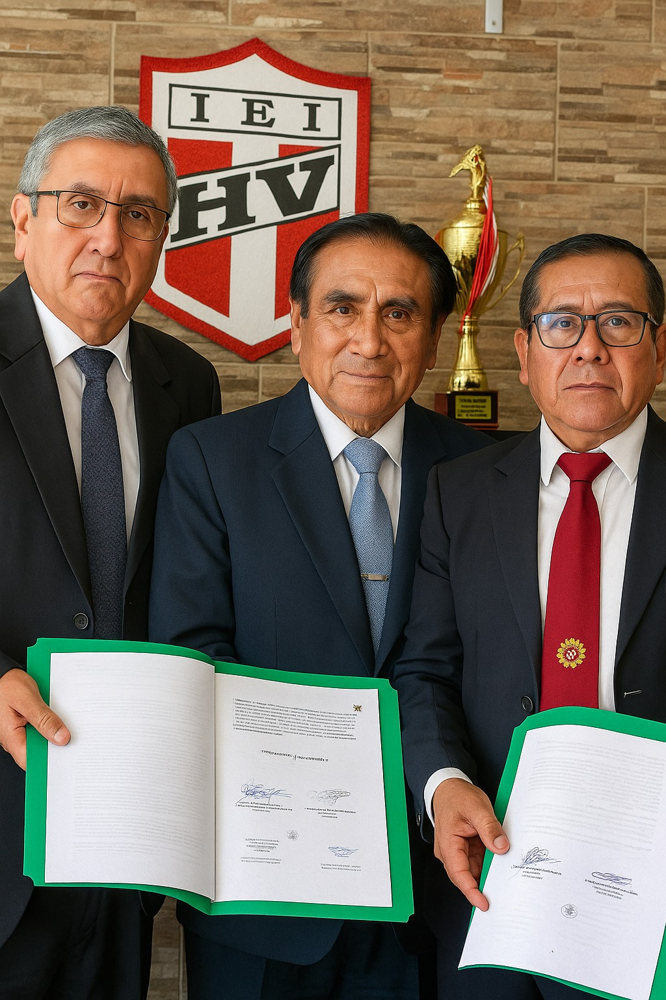
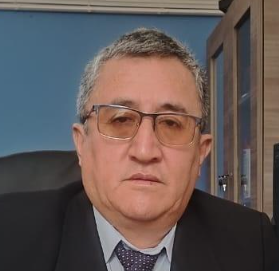
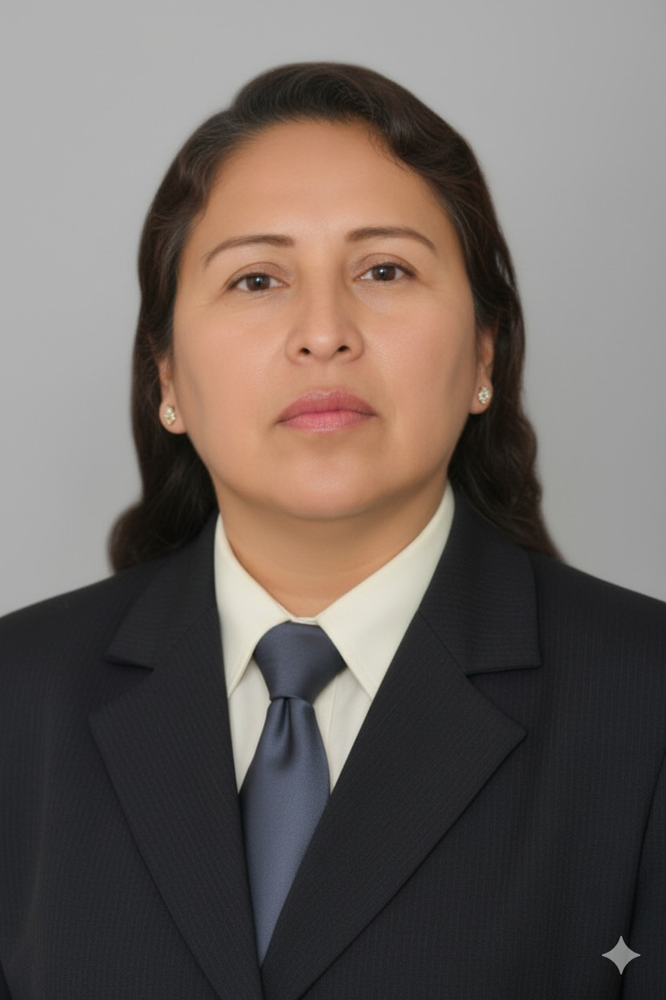
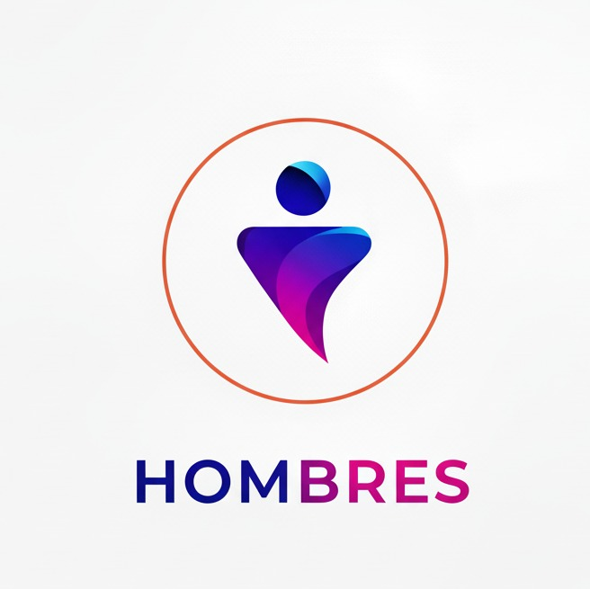
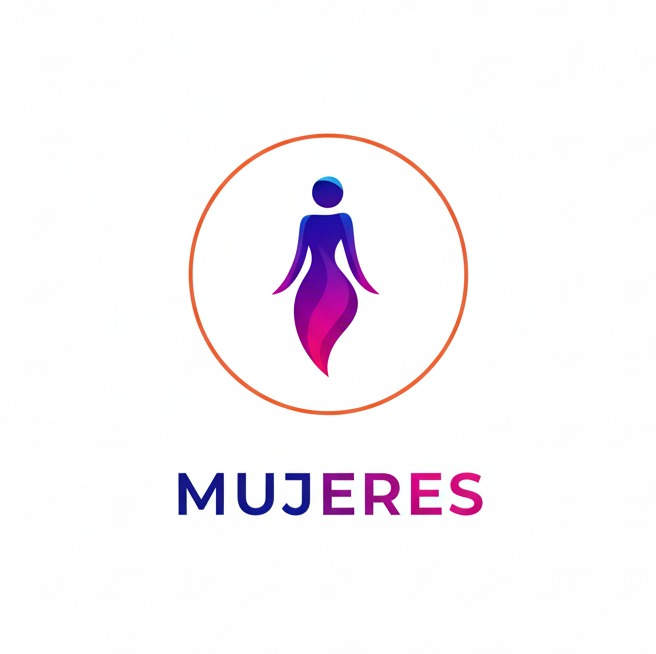
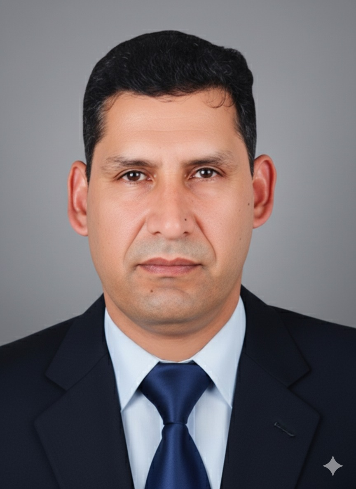

Nuestra Historia
Más de dos décadas formando profesionales técnicos en Huánuco
Fundación
CETPRO Arsenio Mendoza Flor inicia sus actividades en su sede central de Paucarbamba, Amarilis, con la visión de brindar educación de calidad para el trabajo en Huánuco.
Crecimiento y Consolidación
Ampliamos nuestra oferta educativa y mejoramos nuestros talleres. Nos consolidamos como un referente en formación técnica, superando los 150 estudiantes matriculados.
Modernización y Convenios
Comienza una etapa de renovación de equipamiento y se sientan las bases de nuestro modelo de expansión, firmando los primeros convenios con gobiernos locales.
Adaptación y Nuevos Horizontes
Implementamos la Resolución Viceministerial N° 188-2020, permitiendo a nuestros egresados continuar estudios superiores, y fortalecimos nuestros programas en la sede central.
Infraestructura de Primer Nivel
Inauguramos una moderna cancha de grass sintético con recursos propios, reafirmando nuestro compromiso con una formación integral para nuestros estudiantes.
Expansión Regional
Materializamos nuestros convenios con la apertura de nuevas sedes y aulas descentralizadas, llevando nuestra formación técnica a distritos como Cayrán y Panao (Pachitea).
Presente y Futuro
Consolidamos nuestra presencia regional con sedes activas en Cayrán, Panao y la comunidad de Malconga. Con más de 2,500 egresados, somos líderes en formación técnica en Huánuco.

Misión
Somos una Institución Técnico Productiva de Gestión Estatal inclusiva, con personal calificado, infraestructura adecuada, tecnología moderna; promotores de una cultura preventiva ante riesgos y desastres, que formamos integralmente a los técnicos competitivos en diferentes programas de estudio, con liderazgo, autonomía y emprendimiento para insertarlos al mercado laboral.
Visión
El CETPRO “Arsenio Mendoza Flor”, al 2025 será una institución técnico productiva de ciclo técnico, licenciada y acreditada, líder a nivel nacional; identificada con la cultura, tecnología, la práctica de valores y un enfoque ambiental preventivo ante situaciones de riesgos y desastres naturales; que brinda una formación técnica de calidad, de forma presencial y virtual.
Nuestros Valores
Los principios que guían nuestro actuar diario
Calidad
Garantizamos excelencia académica y organizacional en cada uno de nuestros procesos.
Cultura Emprendedora
Fomentamos la iniciativa, la autonomía y la capacidad de crear oportunidades de desarrollo.
Creatividad
Impulsamos la generación de ideas innovadoras para enfrentar retos con soluciones originales.
Responsabilidad
Cumplimos con nuestros compromisos y asumimos con seriedad las consecuencias de nuestros actos.
Puntualidad
Valoramos el tiempo como recurso esencial, actuando siempre con orden y disciplina.
Inclusión
Promovemos la igualdad de oportunidades, respetando y valorando la diversidad.
Honestidad
Actuamos con transparencia, sinceridad y coherencia en todas nuestras acciones.
Conciencia Ambiental
Adoptamos prácticas sostenibles y responsables para el cuidado del medio ambiente.
Respeto
Reconocemos y valoramos la dignidad de cada persona, promoviendo la convivencia armónica.
Equidad
Garantizamos justicia e igualdad en el acceso a oportunidades y derechos.
Nuestros Logros en Números
Cifras que demuestran nuestro compromiso con la excelencia
Nuestra Directiva
El equipo directivo que lidera nuestra institución hacia la excelencia

Mg: Orlando Luis SILVESTRE VELASQUEZ
Director de CETPRO
Altamente experimentado, Magíster en Administración de la Educación y Especialista en Gestión Escolar con Liderazgo Pedagógico. Profundo conocedor de la Educación Técnico-Productiva (ETP) en sus dimensiones pedagógica, administrativa y de gestión. Mi enfoque se centra en el liderazgo proactivo para la modernización e innovación de la oferta formativa, asegurando su pertinencia con las demandas del mercado laboral y el desarrollo productivo. Además, como empresario agroindustrial, integro teoría y práctica para vincular estratégicamente el CETPRO con el sector productivo y fomentar la empleabilidad de los egresados.
- Liderazgo Pedagógico y Gerencial en dirección estratégica de instituciones educativas
- Gestión educativa: planificación y supervisión de recursos y procesos
- Conocimiento de ETP: diseño curricular y actualización de programas técnico-productivos
- Visión emprendedora: desarrollo de módulos formativos y proyectos productivos
- Proactividad e innovación: impulso de la mejora continua y adaptación tecnológica
Lic. Vilma Portal Malpartida
Coordinadora de la Sede Principal
Especialista en gestión educativaImpulsa la colaboración docente y la optimización de procesos administrativos para garantizar un entorno de aprendizaje dinámico y efectivo.
Bach. Giovanna Edy Zambrano Castro
Coordinadora de la Sub Sede Malconga
3 años en docencia y más de 10 años en pasteleríaDocente y emprendedora en Panadería y Pastelería. Combina la enseñanza técnica con la gestión de su propio negocio, fomentando la creatividad y la innovación en la formación de los estudiantes.

Téc. Marlen Blacido Céspedes
Coordinadora de la Sub Sede Panao
2 años de experiencia docenteDocente técnica en Confección Textil. Aplica metodologías activas para potenciar las habilidades prácticas de los estudiantes, con responsabilidad y compromiso en su labor educativa.
Nuestro Equipo Docente
Profesionales especializados comprometidos con tu formación
Área de Computación e Informática

Percy Bustamante Zevallos
Ing. Sistemas -- SEDE PRINCIPAL HUÁNUCO
Especialista en Soporte TécnicoÁrea de Confecciones y Textil

Jovana Gallardo Gutierrez
Diseñadora de Modas -- SEDE PRINCIPAL HUÁNUCO
Patronaje y Confección de prendas de vestir para damasBraulia Sifuentes Herrera
Técnica Textil -- SEDE PRINCIPAL HUÁNUCO
Patronaje y Confección de prendas de vestir para caballerosTéc. Marlen Blacido Céspedes
Docente de Confección Textil — SUB SEDE PANAO
Formación técnica en confección textil, con experiencia en enseñanza práctica y metodologías activas que desarrollan competencias técnicas.Área de Belleza y Estética
Ana Luz Cardenas Pablo
Esp. Cosmetología -- SEDE PRINCIPAL HUÁNUCO
Peluquería y Tratamientos CapilaresÁrea de Gastronomía
Giovanna Zambrano Castro
Docente de Panadería y Pastelería --SEDE PRINCIPAL HUÁNUCO — Cordinadora -- SUB SEDE MALCONGA
Con más de 10 años de experiencia en pastelería y 3 años en docencia. Promueve la creatividad e innovación en la enseñanza de la gastronomía.Rosario Venturin Asado
Chef Pastelera -- SUB SEDE CAYRAN
Panadería y ReposteríaÁrea Administrativa

Mg. Augusto Villegas Córdova
Docente de Gestión y Planeamiento Educativo — SEDE PRINCIPAL HUÁNUCO
25 años de experiencia. Profesional proactivo con amplia trayectoria en EBR, EBE y CETPRO, comprometido con la mejora continua y el desarrollo institucional.Área de Mecánica
Luis Cuellar Ambrosio
Ing. Mecánico -- SEDE PRINCIPAL HUÁNUCO
Mecánica AutomotrizRoberto Nicasio Trinidad
Técnico Mecánico -- SUB SEDE PANAO
Mecánica AutomotrizÁrea de Corte y Armado de Calzados
Ambar Santos Sulhuaga
Tecnico Textil -- SEDE PRINCIPAL HUÁNUCO
Confeccion de calzados para damas t caballeros¿Quieres ser parte de nuestra historia?
Únete a una institución con 25 años de experiencia formando profesionales exitosos